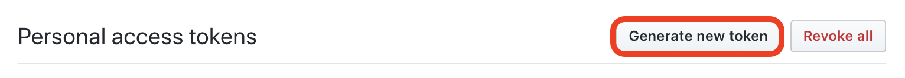
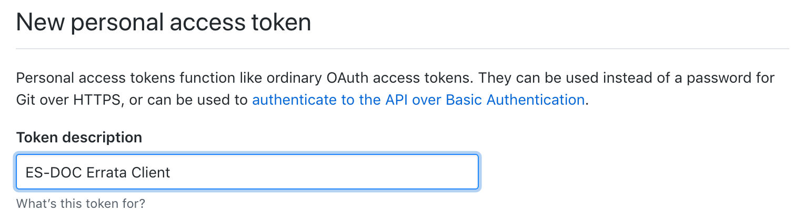
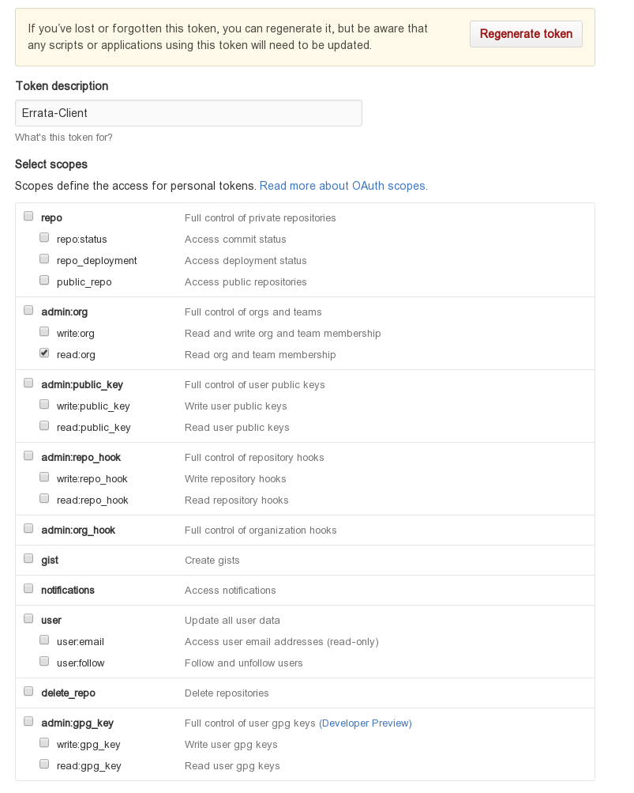
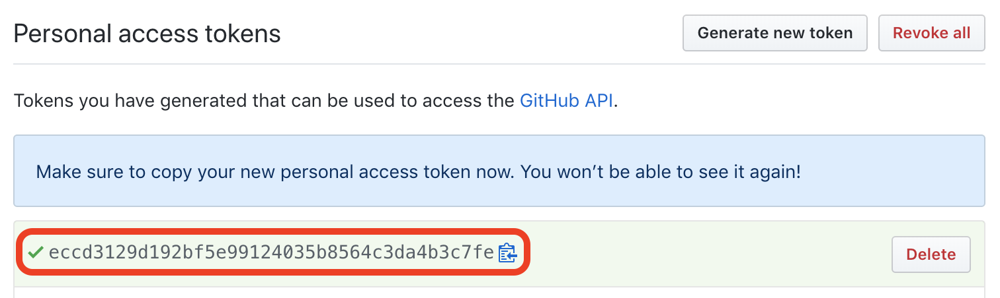

Configuration¶
GitHub setup¶
Authentication is essential to use the “write” features of the esgissue package.
A verified (by email) GitHub account is required. The authentication part is set by generating the personal access token through your GitHub profile setting page.
Sign up/in to GitHub.

Click on the upper-right avatar and go on the bottom of the menu to access to “Settings”.
Go on the bottom of the left menu of your profile page to access to “Developer Settings”.
In the left menu click on “Personal Access Token”.
In the main page click on “Generate new token”
Name your token
Note
Make sure you associate a meaningful name and description for your newly generated token, to help you manage your tokens.
Define your token scope(s)
Warning
This step is important step. We highly recommend to set the minimum required scope for your personal access token:
orgs:READ. Limiting the number of scopes increases the security of your own personal data associated with your github account.Go on the bottom of the form and click on “Generate token”.
Your token is ready to use.
Note
You can revoke your token any time and generate a new one without any consequences on the Errata Service authorization.
{kind=link}
{kind=link}
{kind=link}
{kind=link}
{kind=link}
{kind=link}
{kind=link}
Authorization¶
Authorization is controlled using GitHub’s organizations invitational based structure. The ES-DOC-ERRATA officers (designated in each group) and administrator are the only persons qualified to add GitHub users to the requested teams. For the authorization, a user needs to be part of the organization team specified for the institute and project he/she on behalf of which wishes to publish issues.
Please ask to your ES-DOC officer or the ES-DOC administrator to add your GitHub username to the appropriate GitHub organization team(s). Don’t forget to provide the institute(s) and the project(s) on behalf of which you wishe to publish issues.
Credentials management¶
In order to ease the interactions with the ES-DOC-ERRATA web service, a user can save the credentials for recurrent use. This can be done either through environment variables:
$> export ESDOC_HOME=~/.esdoc
$> export ERRATA_CLIENT_GITHUB_TOKEN=xxxxxxxxxxxxxxxxxxxxxxxxxxxxxxxxx
$> export ERRATA_CLIENT_GITHUB_USERNAME=xxxxxxxxxxxxxxxxxxxxxxxxxxxxxxxxx
This will enable the client to retrieve the token whenever the action requires it and stops it from prompting the user to type it in. However setting the token on environment variables sets it up for grabs in clear text. For this reason an encrypted local file solution is more encouraged to be employed by users. This file is encrypted using a chosen pass-phrase but it also is valid on the currently used machine only. In order to generate your token local file:
$> esgissue credset
Note
To avoid prompt you can directly submit your GitHub username and token using the options --username, --token and --pass if you want to set a passphrase.
After setting your credentials you might want to give the new credentials a test and see if they work as expected. To do this the credtest command test your authentication then authorization linked to the selected institute errata management for a specific project.
$> esgissue credtest -i <INSTITUTE> -p <PROJECT>
After declaring these credentials, the client will only ask user to provide the pass-phrase from now on. In case the user forgets the pass-phrase the saved credentials can be reset using the command:
$> esgissue changepass
Note
Old and new pass-phrases can be submit on the command-line to avoid the prompt using --oldpass and --newpass options.
In the event of wanting to remove your saved credentials that you have saved on your machine:
$> esgissue credremove